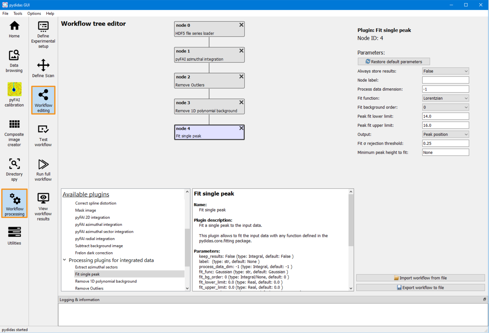
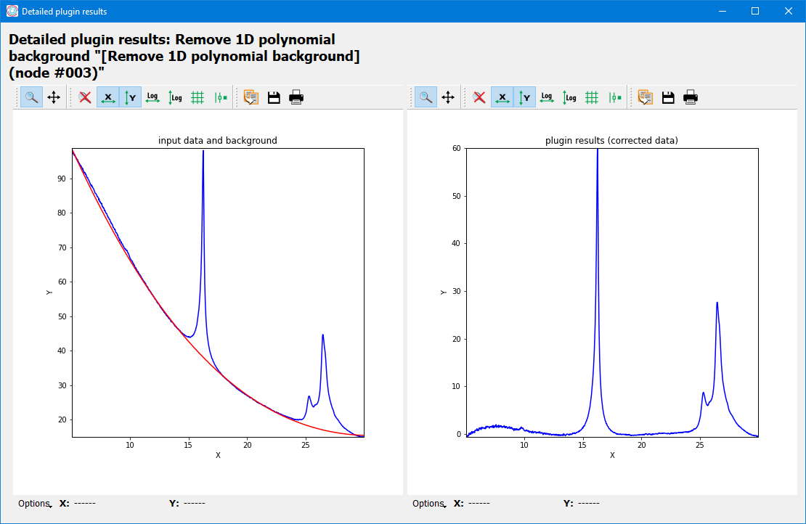
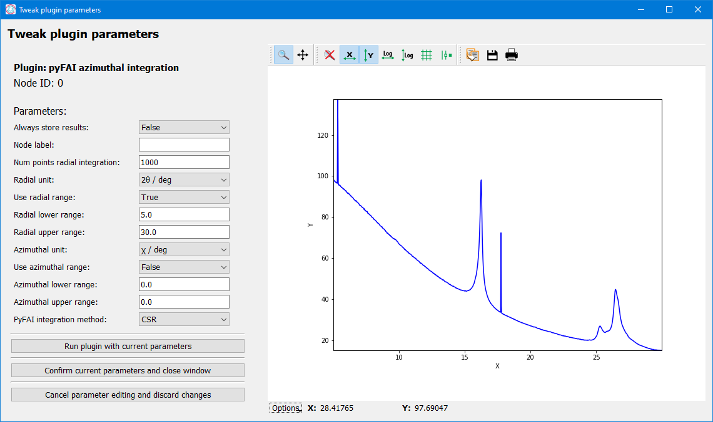

Using the pydidas processing pipeline
Note
While setting up and using the pydidas processing pipeline is also available
from the command line, creating and editing the
WorkflowTree,
DiffractionExperimentContext, and
ScanContext are more easily
done in the graphical user interface and therefore, this guide covers
the GUI.
To process data from scratch, the following steps need to be performed:
Perform the detector calibration (in pyFAI geometry)
Define the experimental setup (X-ray energy, detector, geometry) using the calibration.
Define the scan (paths, filenames and scanpoints).
Define the workflow which defines which operations to perform on the data.
Test the workflow and tweak processing parameters (optional).
Run workflow and save results.
Each of the steps will be explained in detail below. Also, an example will be used for demonstration of each step.
1. Detector calibration
The detector calibration can best be performed using the pyFAI-calib2 tool. A version of this tool is implemented in pydidas and can be accessed directly through the toolbar menu on the left (circled in orange):
{kind=link}
For a tutorial on how to use the pyFAI-calib2 tool, please refer directly to the pyFAI calibration tutorial.
2. Define the experimental setup

The pydidas frame to edit the experimental setup can be accessed through the Workflow processing -> Define experimental setup toolbar entries (marked in orange on the left).
If you just performed the detector calibration, use the 2nd button from the top Copy all experimental parameters from calibration to automatically update all Parameter values, with the exception of the detector mask.
If you want to re-use a previous detector calibration, use the topmost button import experimerimental parameters from file to open a file selection dialogue. After confirming the selected file, the parameters are updated. Note that the detector mask file parameter is not included in pyFAI’s .poni file format and is not updated when importing a poni file.
The detector mask file must be set independently of the pyFAI calibration parameter import, if it has not been set in the pyFAI calibration.
For more details, please refer to the DefineDiffractionExpFrame manual.
Example
The example has been performed at an X-ray energy of 13 keV using an Eiger 9M detector. This information was available from the beamline. The mask file for the detector was saved at E:testeiger_mask.npy (in numpy binary format). All the information was copied from the detector calibration.
3. Define the scan
{kind=link}
Scan parameters and metadata can be edited on the define scan frame which can be accessed through the Workflow processing -> Define scan toolbar entries (marked in orange in the image above).
All of the global scan parameters (except for the scan title) found in the left column are mandatory, whereas on the number of scan points is mandatory for each scan dimension.
The parameters for the scan base directory and naming pattern allow pydidas to find the data and read the correct files. The number of scan points in each scan dimension allows pydidas to re-arrange the input data in the correct shape. The additional parameters for the individual scan dimensions are used for annotating the results and for giving meaningful values to the dimensions but they are not strictly necessary.
For more information, please refer to the Define scan frame manual.
Example
In the example used in the image above, the individual image files are located in the E:testraw directory and the data files are named test_00010_data.h5, test_00011_data.h5, etc. (therefore, the starting index is set to 10).
One image was acquired at each scan point in a mesh of 25 x 25 points.
4. Creating the workflow
{kind=link}
To create the workflow, select the Workflow processing - > Workflow editing toolbar entry (marked in orange in the image above). The workflow is comprised of individual plugins which each perform a single task, like frame loading, azimuthal integration, background correction, peak fitting. The workflow can branch downward in an unlimited number of nodes (subject to processing resources).
Use the Plugin browser at the bottom of the frame to display more information about and to select plugins. Double click on any plugin to add it as child to the current plugin or use the right mouse button on a Plugin to open a menu with additional options.
Clicking on a plugin in the field at the top selects it and opens these plugin’s parameters on the right side for editing. Plugins can also be rearranged by drag & drop.
For additional information, please refer to the Workflow edit frame manual.
Note that pydidas by default only stores the result of leaves (i.e. plugins
which have no children). If you want to store additional results, please set the
Always store results parameter to True.
Example
In the example used above, the plugins have been used with most of their default settings. Only the radial integration has been limited to [5, 30] degrees in the pyFAI azimuthal integration plugin (to have a region with a smooth background which can be well subtracted) and the Fit single peak has been changed to use a Lorentzian function and to set the limits.
5. Testing the workflow

Once the parameters for Experiment, Scan and and Workflow have been configured, the Workflow can be tested. Select the Workflow processing - > Test Workflow toolbar entry (marked in orange in the image above).
Pick a good datapoint by using either the image number or scan indices and click the button Process frame to run the workflow locally. Note: To avoid overhead, the workflow is executed in the same process and is blocking. Especially using any pyFAI integration for the first time will require a few seconds to set up the matrix tables.
The Results dropdown selection allows to see the results for any plugin in the workflow. The textbox on the left gives you additional information about the plugin results, the window on the right plots the 2d image or 1d curve. If you are not happy with the results, select the Tweak plugin parameters button at the bottom to open a new window and edit this plugin’s parameters.
5.1 Plugin details
Some plugins allow to inspect detailed results which can be anything and which are defined in each plugin. The Show detailed results for plugin button opens a new window with the details for the selected plugin.
{kind=link}
Depending on the plugin, several images or plots can be shown in this window. All plots are labelled. More information, including a legend, can be accessed through the Options at the bottom of the plot.
5.2 Tweaking Parameters
Using the Tweak plugin parameters button on the Test Workflow frame opens a new window which allows to modify Plugin parameters in place.
{kind=link}
The Run plugin with current parameters will run the current plugin only and display its results (and its details, if the plugin has them defined). Once you have configured the plugin to your wishes, use the Confirm current parameters and close window button. This will also run any child plugins with the updated input data again.
Example
The resulting outputs for each plugin in the workflow are shown below:
{kind=link}
The imported image from the loader.

The azimuthally integrated data.

The data after outlier removal.

The data after polynomial background removal.
6. Running the full workflow

Once you are confident that everything is configured correctly, select the Workflow processing - > Run full Workflow toolbar entry (marked in orange in the image above). This will open the Run full workflow frame which allows to run the workflow in separate processes in the background and to visualize the results.
The Start processing button opens background processes, which perform the actual processing and only communicate their results. Starting these processes takes some time and once results come in, you can select one of the nodes from the drop-down on the left to display their results. For details, please refer to the Run full workflow frame manual.